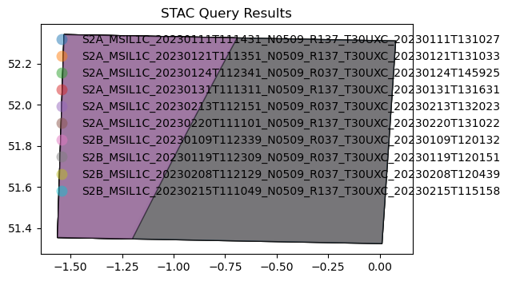

# If needed you can install a package in the current AppHub Jupyter environment using pip
# For instance, we will need the following libraries
import sys
!{sys.executable} -m pip install --upgrade pyeodh pandas matplotlib numpy pillowDemonstration for DEFRA
Add EODH, CEDA and Oxidian logos! (TODO)
Description & purpose: This Notebook is designed to showcase the initial functionality of the Earth Observation Data Hub. It provides a snapshot of the Hub, the pyeodh API client and the various datasets as of September 2024. The user has a test site (Thetford) and would like to understand more about the satellite data available for that area. The user is also interested in obtaining a cloud free dataset and creating a data cube. The Notebook is designed in such a way that it can be run on the EODH AppHub (Notebook Service) or from a local environment.
Author(s): Alastair Graham, Dusan Figala, Phil Kershaw
Date created: 2024-09-05
Date last modified: 2024-09-18
Licence: This notebook is licensed under Creative Commons Attribution-ShareAlike 4.0 International. The code is released using the BSD-2-Clause license.
Copyright (c) , All rights reserved.
Redistribution and use in source and binary forms, with or without modification, are permitted provided that the following conditions are met:
Redistributions of source code must retain the above copyright notice, this list of conditions and the following disclaimer. Redistributions in binary form must reproduce the above copyright notice, this list of conditions and the following disclaimer in the documentation and/or other materials provided with the distribution. THIS SOFTWARE IS PROVIDED BY THE COPYRIGHT HOLDERS AND CONTRIBUTORS “AS IS” AND ANY EXPRESS OR IMPLIED WARRANTIES, INCLUDING, BUT NOT LIMITED TO, THE IMPLIED WARRANTIES OF MERCHANTABILITY AND FITNESS FOR A PARTICULAR PURPOSE ARE DISCLAIMED. IN NO EVENT SHALL THE COPYRIGHT HOLDER OR CONTRIBUTORS BE LIABLE FOR ANY DIRECT, INDIRECT, INCIDENTAL, SPECIAL, EXEMPLARY, OR CONSEQUENTIAL DAMAGES (INCLUDING, BUT NOT LIMITED TO, PROCUREMENT OF SUBSTITUTE GOODS OR SERVICES; LOSS OF USE, DATA, OR PROFITS; OR BUSINESS INTERRUPTION) HOWEVER CAUSED AND ON ANY THEORY OF LIABILITY, WHETHER IN CONTRACT, STRICT LIABILITY, OR TORT (INCLUDING NEGLIGENCE OR OTHERWISE) ARISING IN ANY WAY OUT OF THE USE OF THIS SOFTWARE, EVEN IF ADVISED OF THE POSSIBILITY OF SUCH DAMAGE.
Set up
The following cell only needs to be run on the AppHub. If you have a local Python environment running install the required packages as you would normally.
What is EODH?
1) it’s data discovery
pyeodh exposes the Hub’s API endpoints to Python users
# Imports
import pyeodh# Connect to the Hub
client = pyeodh.Client().get_catalog_service()
# Print a list of the collections held in the Resource Catalogue (their id and description)
for collect in client.get_collections():
print(f"{collect.id}: {collect.description}")cmip6: CMIP6
cordex: CORDEX
ukcp: UKCP
airbus_sar_data: The German TerraSAR-X / TanDEM-X satellite formation and the Spanish PAZ satellite (managed by Hisdesat Servicios Estratégicos S.A.) are being operated in the same orbit tube and feature identical ground swaths and imaging modes - allowing Airbus and Hisdesat to establish a unique commercial Radar Constellation. The satellites carry a high frequency X-band Synthetic Aperture Radar (SAR) sensor in order to acquire datasets ranging from very high-resolution imagery to wide area coverage.
airbus_data_example: Airbus data
airbus_data_example: Airbus data
sentinel2_ard: sentinel 2 ARD
sentinel1: Sentinel 1
naip: The [National Agriculture Imagery Program](https://www.fsa.usda.gov/programs-and-services/aerial-photography/imagery-programs/naip-imagery/) (NAIP) provides U.S.-wide, high-resolution aerial imagery, with four spectral bands (R, G, B, IR). NAIP is administered by the [Aerial Field Photography Office](https://www.fsa.usda.gov/programs-and-services/aerial-photography/) (AFPO) within the [US Department of Agriculture](https://www.usda.gov/) (USDA). Data are captured at least once every three years for each state. This dataset represents NAIP data from 2010-present, in [cloud-optimized GeoTIFF](https://www.cogeo.org/) format.
cop-dem-glo-90: The Copernicus DEM is a Digital Surface Model (DSM) which represents the surface of the Earth including buildings, infrastructure and vegetation. GLO-90 provides worldwide coverage at 90 meters.# Find some commercial data# Find some open data- it’s mass compute what are workflows There’s also a QGIS plugin
# connect to the Workflow Runner# Choose and parameterise a workflow# Run the workflow# Find the outputs- it’s data analysis Notebook service can be used with pyeodh and other libraries installed using pip to analyse data and outputs
# Create a data cube?Following https://odc-stac.readthedocs.io/en/latest/notebooks/stac-load-e84-aws.html
TRY TO USE EODH
import dask.distributed
import folium
#import folium.plugins # Not sure what this does
import geopandas as gpd
import shapely.geometry
from IPython.display import display
from pystac_client import Client
from odc.stac import configure_rio, stac_load # the data cube bit
def convert_bounds(bbox, invert_y=False):
"""
Helper method for changing bounding box representation to leaflet notation
``(lon1, lat1, lon2, lat2) -> ((lat1, lon1), (lat2, lon2))``
"""
x1, y1, x2, y2 = bbox
if invert_y:
y1, y2 = y2, y1
return ((y1, x1), (y2, x2))# FIND STAC ITEMS
#km2deg = 1.0 / 111
#x, y = (113.887, -25.843) # Center point of a query
#r = 100 * km2deg
#bbox = (x - r, y - r, x + r, y + r)
url = "https://api.stac.ceda.ac.uk/"
#catalog = Client.open("https://earth-search.aws.element84.com/v1/")
client = Client.open(url)
for coll in client.get_collections():
print(f"{coll.id}: {coll.description}")cmip6: CMIP6
cordex: CORDEX
sentinel1: Sentinel 1
sentinel2_ard: sentinel 2 ARD
sst-cdrv3-collection: collection of EOCIS SST CDR V3
ukcp: UKCPsentinel2_ard = client.get_collection('sentinel2_ard')
sentinel2_ard.get_items()
# check the spatial and temporal extent of the collection
print("spatial extent:", sentinel2_ard.extent.spatial.bboxes)
print("data range:", [str(d) for d in sentinel2_ard.extent.temporal.intervals[0]])
#items = list(query.items())
#print(f"Found: {len(items):d} datasets")
# Convert STAC items into a GeoJSON FeatureCollection
#stac_json = query.item_collection_as_dict()spatial extent: [[-9.00034454651177, 49.48562028352171, 3.1494256015866995, 61.33444247301668]]
data range: ['2023-01-01 11:14:51+00:00', '2023-11-01 11:43:49+00:00']# SEARCH
item_search = client.search(
collections=['sentinel2_ard'],
query=[
'start_datetime>=2023-01-01',
'end_datetime<=2023-02-28',
],
max_items=100,
)items = list(item_search.items())
len(items)100from shapely import Point
point = Point(-1.3144835766058023, 51.57555380377267) # Atlas building at RAL
item_search = client.search(
collections=['sentinel2_ard'],
intersects=point,
query=[
'start_datetime>=2023-01-01',
'end_datetime<=2023-02-28',
],
max_items=10,
)
items = list(item_search.items())
items[<Item id=neodc.sentinel_ard.data.sentinel_2.2023.02.25.S2B_20230225_lat52lon075_T30UXC_ORB137_utm30n_osgb>,
<Item id=neodc.sentinel_ard.data.sentinel_2.2023.02.23.S2A_20230223_lat52lon075_T30UXC_ORB037_utm30n_osgb>,
<Item id=neodc.sentinel_ard.data.sentinel_2.2023.02.20.S2A_20230220_lat52lon075_T30UXC_ORB137_utm30n_osgb>,
<Item id=neodc.sentinel_ard.data.sentinel_2.2023.02.15.S2B_20230215_lat52lon075_T30UXC_ORB137_utm30n_osgb>,
<Item id=neodc.sentinel_ard.data.sentinel_2.2023.02.13.S2A_20230213_lat52lon075_T30UXC_ORB037_utm30n_osgb>,
<Item id=neodc.sentinel_ard.data.sentinel_2.2023.02.08.S2B_20230208_lat52lon075_T30UXC_ORB037_utm30n_osgb>,
<Item id=neodc.sentinel_ard.data.sentinel_2.2023.01.31.S2A_20230131_lat52lon075_T30UXC_ORB137_utm30n_osgb>,
<Item id=neodc.sentinel_ard.data.sentinel_2.2023.01.24.S2A_20230124_lat52lon075_T30UXC_ORB037_utm30n_osgb>,
<Item id=neodc.sentinel_ard.data.sentinel_2.2023.01.21.S2A_20230121_lat52lon075_T30UXC_ORB137_utm30n_osgb>,
<Item id=neodc.sentinel_ard.data.sentinel_2.2023.01.19.S2B_20230119_lat52lon075_T30UXC_ORB037_utm30n_osgb>]items[0].to_dict(){'type': 'Feature',
'stac_version': '1.0.0',
'id': 'neodc.sentinel_ard.data.sentinel_2.2023.02.25.S2B_20230225_lat52lon075_T30UXC_ORB137_utm30n_osgb',
'properties': {'file_count': 7,
'start_datetime': '2023-02-25T11:09:39Z',
'end_datetime': '2023-02-25T11:09:39Z',
'NSSDC Identifier': '2015-000A',
'created': '2024-02-07T11:36:30.012295Z',
'Instrument Family Name': 'Multi-Spectral Instrument',
'Platform Number': '2B',
'Datatake Type': 'INS-NOBS',
'esa_file_name': 'S2B_MSIL1C_20230225T110939_N0509_R137_T30UXC_20230225T115203',
'Ground Tracking Direction': 'descending',
'datetime': '2023-02-25T11:09:39Z',
'instance_id': 'neodc.sentinel_ard.data.sentinel_2.2023.02.25.S2B_20230225_lat52lon075_T30UXC_ORB137_utm30n_osgb',
'size': 1949488461,
'Product Type': 'S2MSI1C',
'Instrument Family Name Abbreviation': 'MSI',
'Start Orbit Number': '031194',
'eo:cloud_cover': '74.4384424736481',
'Start Relative Orbit Number': '137',
'updated': '2024-02-07T11:36:30.012295Z',
'Instrument Mode': None,
'EPSG': '27700'},
'geometry': {'coordinates': [[[-1.5321045, 52.34135509726958],
[0.077757925309447, 52.31036691499413],
[0.011254122594852, 51.32452335478603],
[-1.5638733, 51.354439390266904],
[-1.5321045, 52.34135509726958]]],
'type': 'Polygon'},
'links': [{'rel': 'self',
'href': 'https://api.stac.ceda.ac.uk/collections/sentinel2_ard/items/neodc.sentinel_ard.data.sentinel_2.2023.02.25.S2B_20230225_lat52lon075_T30UXC_ORB137_utm30n_osgb',
'type': 'application/geo+json'},
{'rel': 'parent',
'href': 'https://api.stac.ceda.ac.uk/collections/sentinel2_ard',
'type': 'application/json'},
{'rel': 'collection',
'href': 'https://api.stac.ceda.ac.uk/collections/sentinel2_ard',
'type': 'application/json'},
{'rel': 'root',
'href': 'https://api.stac.ceda.ac.uk/',
'type': 'application/json',
'title': 'stac-fastapi-elasticsearch'}],
'assets': {'cloud': {'href': 'https://dap.ceda.ac.uk/neodc/sentinel_ard/data/sentinel_2/2023/02/25/S2B_20230225_lat52lon075_T30UXC_ORB137_utm30n_osgb_clouds.tif',
'size': 1900764,
'location': 'on_disk',
'roles': ['data']},
'metadata': {'href': 'https://dap.ceda.ac.uk/neodc/sentinel_ard/data/sentinel_2/2023/02/25/S2B_20230225_lat52lon075_T30UXC_ORB137_utm30n_osgb_vmsk_sharp_rad_srefdem_stdsref_meta.xml',
'size': 18360,
'location': 'on_disk',
'roles': ['metadata']},
'thumbnail': {'href': 'https://dap.ceda.ac.uk/neodc/sentinel_ard/data/sentinel_2/2023/02/25/S2B_20230225_lat52lon075_T30UXC_ORB137_utm30n_osgb_vmsk_sharp_rad_srefdem_stdsref_thumbnail.jpg',
'size': 85207,
'location': 'on_disk',
'roles': ['thumbnail']},
'topographic_shadow': {'href': 'https://dap.ceda.ac.uk/neodc/sentinel_ard/data/sentinel_2/2023/02/25/S2B_20230225_lat52lon075_T30UXC_ORB137_utm30n_osgb_toposhad.tif',
'size': 250612,
'location': 'on_disk',
'roles': ['data']},
'cog': {'href': 'https://dap.ceda.ac.uk/neodc/sentinel_ard/data/sentinel_2/2023/02/25/S2B_20230225_lat52lon075_T30UXC_ORB137_utm30n_osgb_vmsk_sharp_rad_srefdem_stdsref.tif',
'size': 1945239489,
'eo:bands': [{'full_width_half_max': 0.07,
'central_wavelength': 492.1,
'name': 'B02',
'description': 'Blue',
'common_name': 'blue'},
{'full_width_half_max': 0.04,
'central_wavelength': 559,
'name': 'B03',
'description': 'Green',
'common_name': 'green'},
{'full_width_half_max': 0.03,
'central_wavelength': 665,
'name': 'B04',
'description': 'Red',
'common_name': 'red'},
{'full_width_half_max': 0.02,
'central_wavelength': 703.8,
'name': 'B05',
'description': 'Visible and Near Infrared',
'common_name': 'rededge'},
{'full_width_half_max': 0.02,
'central_wavelength': 739.1,
'name': 'B06',
'description': 'Visible and Near Infrared',
'common_name': 'rededge'},
{'full_width_half_max': 0.02,
'central_wavelength': 779.7,
'name': 'B07',
'description': 'Visible and Near Infrared',
'common_name': 'rededge'},
{'full_width_half_max': 0.11,
'central_wavelength': 833,
'name': 'B08',
'description': 'Visible and Near Infrared',
'common_name': 'nir'},
{'full_width_half_max': 0.02,
'central_wavelength': 864,
'name': 'B08a',
'description': 'Visible and Near Infrared',
'common_name': 'nir08'},
{'full_width_half_max': 0.09,
'central_wavelength': 1610.4,
'name': 'B11',
'description': 'Short Wave Infrared',
'common_name': 'swir16'},
{'full_width_half_max': 0.19,
'central_wavelength': 2185.7,
'name': 'B12',
'description': 'Short Wave Infrared',
'common_name': 'swir22'}],
'location': 'on_disk',
'roles': ['data']},
'valid_pixels': {'href': 'https://dap.ceda.ac.uk/neodc/sentinel_ard/data/sentinel_2/2023/02/25/S2B_20230225_lat52lon075_T30UXC_ORB137_utm30n_osgb_valid.tif',
'size': 288670,
'location': 'on_disk',
'roles': ['data']},
'saturated_pixels': {'href': 'https://dap.ceda.ac.uk/neodc/sentinel_ard/data/sentinel_2/2023/02/25/S2B_20230225_lat52lon075_T30UXC_ORB137_utm30n_osgb_sat.tif',
'size': 1705359,
'location': 'on_disk',
'roles': ['data']}},
'bbox': [-1.5638733, 51.32452335478603, 0.077757925309447, 52.34135509726958],
'stac_extensions': ['https://stac-extensions.github.io/eo/v1.1.0/schema.json'],
'collection': 'sentinel2_ard'}item_search = client.search(
collections=['sentinel2_ard'],
intersects=point,
query=[
'start_datetime>=2023-01-01',
'end_datetime<=2023-02-28',
'eo:cloud_cover<=50.0'
],
max_items=10,
)
items = list(item_search.items())
items[<Item id=neodc.sentinel_ard.data.sentinel_2.2023.02.20.S2A_20230220_lat52lon075_T30UXC_ORB137_utm30n_osgb>,
<Item id=neodc.sentinel_ard.data.sentinel_2.2023.02.15.S2B_20230215_lat52lon075_T30UXC_ORB137_utm30n_osgb>,
<Item id=neodc.sentinel_ard.data.sentinel_2.2023.02.13.S2A_20230213_lat52lon075_T30UXC_ORB037_utm30n_osgb>,
<Item id=neodc.sentinel_ard.data.sentinel_2.2023.02.08.S2B_20230208_lat52lon075_T30UXC_ORB037_utm30n_osgb>,
<Item id=neodc.sentinel_ard.data.sentinel_2.2023.01.31.S2A_20230131_lat52lon075_T30UXC_ORB137_utm30n_osgb>,
<Item id=neodc.sentinel_ard.data.sentinel_2.2023.01.24.S2A_20230124_lat52lon075_T30UXC_ORB037_utm30n_osgb>,
<Item id=neodc.sentinel_ard.data.sentinel_2.2023.01.21.S2A_20230121_lat52lon075_T30UXC_ORB137_utm30n_osgb>,
<Item id=neodc.sentinel_ard.data.sentinel_2.2023.01.19.S2B_20230119_lat52lon075_T30UXC_ORB037_utm30n_osgb>,
<Item id=neodc.sentinel_ard.data.sentinel_2.2023.01.11.S2A_20230111_lat52lon075_T30UXC_ORB137_utm30n_osgb>,
<Item id=neodc.sentinel_ard.data.sentinel_2.2023.01.09.S2B_20230109_lat52lon075_T30UXC_ORB037_utm30n_osgb>]items[0].to_dict(){'type': 'Feature',
'stac_version': '1.0.0',
'id': 'neodc.sentinel_ard.data.sentinel_2.2023.02.20.S2A_20230220_lat52lon075_T30UXC_ORB137_utm30n_osgb',
'properties': {'file_count': 7,
'start_datetime': '2023-02-20T11:11:01Z',
'end_datetime': '2023-02-20T11:11:01Z',
'NSSDC Identifier': '2015-000A',
'created': '2024-02-07T11:34:51.269363Z',
'Instrument Family Name': 'Multi-Spectral Instrument',
'Platform Number': '2A',
'Datatake Type': 'INS-NOBS',
'esa_file_name': 'S2A_MSIL1C_20230220T111101_N0509_R137_T30UXC_20230220T131022',
'Ground Tracking Direction': 'descending',
'datetime': '2023-02-20T11:11:01Z',
'instance_id': 'neodc.sentinel_ard.data.sentinel_2.2023.02.20.S2A_20230220_lat52lon075_T30UXC_ORB137_utm30n_osgb',
'size': 2086211720,
'Product Type': 'S2MSI1C',
'Instrument Family Name Abbreviation': 'MSI',
'Start Orbit Number': '040031',
'eo:cloud_cover': '26.2055898951895',
'Start Relative Orbit Number': '137',
'updated': '2024-02-07T11:34:51.269363Z',
'Instrument Mode': None,
'EPSG': '27700'},
'geometry': {'coordinates': [[[-1.5321045, 52.34135509726958],
[0.077757925309447, 52.31036691499413],
[0.011254122594852, 51.32452335478603],
[-1.5638733, 51.354439390266904],
[-1.5321045, 52.34135509726958]]],
'type': 'Polygon'},
'links': [{'rel': 'self',
'href': 'https://api.stac.ceda.ac.uk/collections/sentinel2_ard/items/neodc.sentinel_ard.data.sentinel_2.2023.02.20.S2A_20230220_lat52lon075_T30UXC_ORB137_utm30n_osgb',
'type': 'application/geo+json'},
{'rel': 'parent',
'href': 'https://api.stac.ceda.ac.uk/collections/sentinel2_ard',
'type': 'application/json'},
{'rel': 'collection',
'href': 'https://api.stac.ceda.ac.uk/collections/sentinel2_ard',
'type': 'application/json'},
{'rel': 'root',
'href': 'https://api.stac.ceda.ac.uk/',
'type': 'application/json',
'title': 'stac-fastapi-elasticsearch'}],
'assets': {'cloud': {'href': 'https://dap.ceda.ac.uk/neodc/sentinel_ard/data/sentinel_2/2023/02/20/S2A_20230220_lat52lon075_T30UXC_ORB137_utm30n_osgb_clouds.tif',
'size': 3144692,
'location': 'on_disk',
'roles': ['data']},
'metadata': {'href': 'https://dap.ceda.ac.uk/neodc/sentinel_ard/data/sentinel_2/2023/02/20/S2A_20230220_lat52lon075_T30UXC_ORB137_utm30n_osgb_vmsk_sharp_rad_srefdem_stdsref_meta.xml',
'size': 18363,
'location': 'on_disk',
'roles': ['metadata']},
'thumbnail': {'href': 'https://dap.ceda.ac.uk/neodc/sentinel_ard/data/sentinel_2/2023/02/20/S2A_20230220_lat52lon075_T30UXC_ORB137_utm30n_osgb_vmsk_sharp_rad_srefdem_stdsref_thumbnail.jpg',
'size': 118722,
'location': 'on_disk',
'roles': ['thumbnail']},
'topographic_shadow': {'href': 'https://dap.ceda.ac.uk/neodc/sentinel_ard/data/sentinel_2/2023/02/20/S2A_20230220_lat52lon075_T30UXC_ORB137_utm30n_osgb_toposhad.tif',
'size': 262653,
'location': 'on_disk',
'roles': ['data']},
'cog': {'href': 'https://dap.ceda.ac.uk/neodc/sentinel_ard/data/sentinel_2/2023/02/20/S2A_20230220_lat52lon075_T30UXC_ORB137_utm30n_osgb_vmsk_sharp_rad_srefdem_stdsref.tif',
'size': 2080673323,
'eo:bands': [{'full_width_half_max': 0.07,
'central_wavelength': 496.6,
'name': 'B02',
'description': 'Blue',
'common_name': 'blue'},
{'full_width_half_max': 0.04,
'central_wavelength': 560,
'name': 'B03',
'description': 'Green',
'common_name': 'green'},
{'full_width_half_max': 0.03,
'central_wavelength': 664.5,
'name': 'B04',
'description': 'Red',
'common_name': 'red'},
{'full_width_half_max': 0.02,
'central_wavelength': 703.9,
'name': 'B05',
'description': 'Visible and Near Infrared',
'common_name': 'rededge'},
{'full_width_half_max': 0.02,
'central_wavelength': 740.2,
'name': 'B06',
'description': 'Visible and Near Infrared',
'common_name': 'rededge'},
{'full_width_half_max': 0.02,
'central_wavelength': 782.5,
'name': 'B07',
'description': 'Visible and Near Infrared',
'common_name': 'rededge'},
{'full_width_half_max': 0.11,
'central_wavelength': 835.1,
'name': 'B08',
'description': 'Visible and Near Infrared',
'common_name': 'nir'},
{'full_width_half_max': 0.02,
'central_wavelength': 864.8,
'name': 'B08a',
'description': 'Visible and Near Infrared',
'common_name': 'nir08'},
{'full_width_half_max': 0.09,
'central_wavelength': 1613.7,
'name': 'B11',
'description': 'Short Wave Infrared',
'common_name': 'swir16'},
{'full_width_half_max': 0.18,
'central_wavelength': 2202.4,
'name': 'B12',
'description': 'Short Wave Infrared',
'common_name': 'swir22'}],
'location': 'on_disk',
'roles': ['data']},
'valid_pixels': {'href': 'https://dap.ceda.ac.uk/neodc/sentinel_ard/data/sentinel_2/2023/02/20/S2A_20230220_lat52lon075_T30UXC_ORB137_utm30n_osgb_valid.tif',
'size': 288608,
'location': 'on_disk',
'roles': ['data']},
'saturated_pixels': {'href': 'https://dap.ceda.ac.uk/neodc/sentinel_ard/data/sentinel_2/2023/02/20/S2A_20230220_lat52lon075_T30UXC_ORB137_utm30n_osgb_sat.tif',
'size': 1705359,
'location': 'on_disk',
'roles': ['data']}},
'bbox': [-1.5638733, 51.32452335478603, 0.077757925309447, 52.34135509726958],
'stac_extensions': ['https://stac-extensions.github.io/eo/v1.1.0/schema.json'],
'collection': 'sentinel2_ard'}for key, value in items[1].assets.items():
print(key, value.href)cloud https://dap.ceda.ac.uk/neodc/sentinel_ard/data/sentinel_2/2023/02/15/S2B_20230215_lat52lon075_T30UXC_ORB137_utm30n_osgb_clouds.tif
metadata https://dap.ceda.ac.uk/neodc/sentinel_ard/data/sentinel_2/2023/02/15/S2B_20230215_lat52lon075_T30UXC_ORB137_utm30n_osgb_vmsk_sharp_rad_srefdem_stdsref_meta.xml
thumbnail https://dap.ceda.ac.uk/neodc/sentinel_ard/data/sentinel_2/2023/02/15/S2B_20230215_lat52lon075_T30UXC_ORB137_utm30n_osgb_vmsk_sharp_rad_srefdem_stdsref_thumbnail.jpg
topographic_shadow https://dap.ceda.ac.uk/neodc/sentinel_ard/data/sentinel_2/2023/02/15/S2B_20230215_lat52lon075_T30UXC_ORB137_utm30n_osgb_toposhad.tif
cog https://dap.ceda.ac.uk/neodc/sentinel_ard/data/sentinel_2/2023/02/15/S2B_20230215_lat52lon075_T30UXC_ORB137_utm30n_osgb_vmsk_sharp_rad_srefdem_stdsref.tif
valid_pixels https://dap.ceda.ac.uk/neodc/sentinel_ard/data/sentinel_2/2023/02/15/S2B_20230215_lat52lon075_T30UXC_ORB137_utm30n_osgb_valid.tif
saturated_pixels https://dap.ceda.ac.uk/neodc/sentinel_ard/data/sentinel_2/2023/02/15/S2B_20230215_lat52lon075_T30UXC_ORB137_utm30n_osgb_sat.tifitems[<Item id=neodc.sentinel_ard.data.sentinel_2.2023.02.20.S2A_20230220_lat52lon075_T30UXC_ORB137_utm30n_osgb>,
<Item id=neodc.sentinel_ard.data.sentinel_2.2023.02.15.S2B_20230215_lat52lon075_T30UXC_ORB137_utm30n_osgb>,
<Item id=neodc.sentinel_ard.data.sentinel_2.2023.02.13.S2A_20230213_lat52lon075_T30UXC_ORB037_utm30n_osgb>,
<Item id=neodc.sentinel_ard.data.sentinel_2.2023.02.08.S2B_20230208_lat52lon075_T30UXC_ORB037_utm30n_osgb>,
<Item id=neodc.sentinel_ard.data.sentinel_2.2023.01.31.S2A_20230131_lat52lon075_T30UXC_ORB137_utm30n_osgb>,
<Item id=neodc.sentinel_ard.data.sentinel_2.2023.01.24.S2A_20230124_lat52lon075_T30UXC_ORB037_utm30n_osgb>,
<Item id=neodc.sentinel_ard.data.sentinel_2.2023.01.21.S2A_20230121_lat52lon075_T30UXC_ORB137_utm30n_osgb>,
<Item id=neodc.sentinel_ard.data.sentinel_2.2023.01.19.S2B_20230119_lat52lon075_T30UXC_ORB037_utm30n_osgb>,
<Item id=neodc.sentinel_ard.data.sentinel_2.2023.01.11.S2A_20230111_lat52lon075_T30UXC_ORB137_utm30n_osgb>,
<Item id=neodc.sentinel_ard.data.sentinel_2.2023.01.09.S2B_20230109_lat52lon075_T30UXC_ORB037_utm30n_osgb>]# SET UP DASK CLIENT
client = dask.distributed.Client()
configure_rio(cloud_defaults=True, aws={"aws_unsigned": True}, client=client) # sets up gdal for cloud use
display(client)/home/al/miniforge3/envs/odc/lib/python3.12/site-packages/distributed/node.py:182: UserWarning: Port 8787 is already in use.
Perhaps you already have a cluster running?
Hosting the HTTP server on port 36089 instead
warnings.warn(Client
Client-18464180-69fc-11ef-adda-f40669402fbd
| Connection method: Cluster object | Cluster type: distributed.LocalCluster |
| Dashboard: http://127.0.0.1:36089/status |
Cluster Info
LocalCluster
ebba7415
| Dashboard: http://127.0.0.1:36089/status | Workers: 4 |
| Total threads: 4 | Total memory: 15.48 GiB |
| Status: running | Using processes: True |
Scheduler Info
Scheduler
Scheduler-cc47dd57-ce18-4acc-8b44-2cfe14ee1b6d
| Comm: tcp://127.0.0.1:43071 | Workers: 4 |
| Dashboard: http://127.0.0.1:36089/status | Total threads: 4 |
| Started: Just now | Total memory: 15.48 GiB |
Workers
Worker: 0
| Comm: tcp://127.0.0.1:37851 | Total threads: 1 |
| Dashboard: http://127.0.0.1:45891/status | Memory: 3.87 GiB |
| Nanny: tcp://127.0.0.1:44451 | |
| Local directory: /tmp/dask-scratch-space/worker-07pluzp_ | |
Worker: 1
| Comm: tcp://127.0.0.1:44127 | Total threads: 1 |
| Dashboard: http://127.0.0.1:38617/status | Memory: 3.87 GiB |
| Nanny: tcp://127.0.0.1:46581 | |
| Local directory: /tmp/dask-scratch-space/worker-j1euk6hp | |
Worker: 2
| Comm: tcp://127.0.0.1:35695 | Total threads: 1 |
| Dashboard: http://127.0.0.1:43975/status | Memory: 3.87 GiB |
| Nanny: tcp://127.0.0.1:46341 | |
| Local directory: /tmp/dask-scratch-space/worker-guemqotg | |
Worker: 3
| Comm: tcp://127.0.0.1:45491 | Total threads: 1 |
| Dashboard: http://127.0.0.1:40249/status | Memory: 3.87 GiB |
| Nanny: tcp://127.0.0.1:45605 | |
| Local directory: /tmp/dask-scratch-space/worker-_dnsv6m3 | |
print(f"Found: {len(items):d} datasets")
# Convert STAC items into a GeoJSON FeatureCollection
stac_json = item_search.item_collection_as_dict()Found: 10 datasets# REVIEW SEARCH RESULTS
gdf = gpd.GeoDataFrame.from_features(stac_json, "epsg:4326")
# Compute granule id from components
#gdf["granule"] = (
# gdf["esa_file_name"].apply(lambda x: f"{x:02d}")
# + gdf["mgrs:latitude_band"]
# + gdf["mgrs:grid_square"]
#)
fig = gdf.plot(
"esa_file_name",
edgecolor="black",
categorical=True,
aspect="equal",
alpha=0.5,
figsize=(6, 12),
legend=True,
legend_kwds={"loc": "upper left", "frameon": False, "ncol": 1},
)
_ = fig.set_title("STAC Query Results")
# PLOT THE SAME, but using FOLIUM
# https://github.com/python-visualization/folium/issues/1501
#from branca.element import Figure
import folium
f = folium.Figure(width=600, height=400)
m = folium.Map(location=[52, 2], zoom_start=5).add_to(f)
#fig = Figure(width="400px", height="500px")
#map1 = folium.Map()
#fig.add_child(map1)
#folium.GeoJson(
# shapely.geometry.box(*bbox),
# style_function=lambda x: dict(fill=False, weight=1, opacity=0.7, color="olive"),
# name="Query",
#).add_to(m)
gdf.explore(
"esa_file_name",
categorical=True,
tooltip=[
"esa_file_name",
# "datetime",
# "eo:cloud_cover",
],
popup=False,
# style_kwds=dict(fillOpacity=0.1, width=2),
name="STAC",
m=m,
)
#map1.fit_bounds(bounds=convert_bounds(gdf.unary_union.bounds))
#display(fig)# CONSTRUCT DASK DATASET
# Note: there are 9 STAC Items on input, and only one timeslice on output.
# Due to groupby="solar_day" (all items that occured on the same day added to one image plane).
# Since we will plot it on a map we need to use `EPSG:3857` projection
crs = "epsg:3857"
zoom = 2**5 # overview level 5
#xx = stac_load(
# items,
# bands=("B04", "B03", "B02"),
# crs=crs,
# resolution=10 * zoom)#,
# chunks={}, # <-- use Dask
# groupby="solar_day",
#)
#display(xx)
#xx = stac_load(
# items,
# chunks={"x": 2048, "y": 2048},
# patch_url=pc.sign,
# resolution=resolution,
# # force dtype and nodata
# dtype="uint16",
# nodata=0,
#)
xx = stac_load(
items,
crs=crs,
resolution=10 * zoom,
chunks={"x": 2048, "y": 2048}, # <-- use Dask
)
print(f"Bands: {','.join(list(xx.data_vars))}")
display(xx)Bands: cloud,thumbnail,topographic_shadow,cog,valid_pixels,saturated_pixels<xarray.Dataset> Size: 79MB
Dimensions: (y: 574, x: 573, time: 10)
Coordinates:
* y (y) float64 5kB 6.862e+06 6.862e+06 ... 6.679e+06
* x (x) float64 5kB -1.742e+05 -1.739e+05 ... 8.8e+03
spatial_ref int32 4B 3857
* time (time) datetime64[ns] 80B 2023-01-09T11:23:39 ... 202...
Data variables:
cloud (time, y, x) float32 13MB dask.array<chunksize=(1, 574, 573), meta=np.ndarray>
thumbnail (time, y, x) float32 13MB dask.array<chunksize=(1, 574, 573), meta=np.ndarray>
topographic_shadow (time, y, x) float32 13MB dask.array<chunksize=(1, 574, 573), meta=np.ndarray>
cog (time, y, x) float32 13MB dask.array<chunksize=(1, 574, 573), meta=np.ndarray>
valid_pixels (time, y, x) float32 13MB dask.array<chunksize=(1, 574, 573), meta=np.ndarray>
saturated_pixels (time, y, x) float32 13MB dask.array<chunksize=(1, 574, 573), meta=np.ndarray># DATA FOOTPRINT
#xx.odc.geobox
# TEST
xx.data_vars[cog]--------------------------------------------------------------------------- NameError Traceback (most recent call last) Cell In[46], line 5 1 # DATA FOOTPRINT 2 #xx.odc.geobox 3 4 # TEST ----> 5 xx.data_vars[cog] NameError: name 'cog' is not defined
%%time
xx = xx.compute() # LOAD INTO LOCAL MEMORY/home/al/miniforge3/envs/odc/lib/python3.12/site-packages/rasterio/__init__.py:304: NotGeoreferencedWarning: Dataset has no geotransform, gcps, or rpcs. The identity matrix will be returned.
dataset = DatasetReader(path, driver=driver, sharing=sharing, **kwargs)
2024-09-03 17:29:35,400 - distributed.worker - ERROR - Compute Failed
Key: ('thumbnail-4cf0090f06da1a44bfc619df23a3de1a', 9, 0, 0)
State: executing
Function: _dask_loader_tyx
args: ([[<odc.loader._rio.RioReader object at 0x7a0209f5bd40>]], Tiles: 1x1|574x573px => 574x573px, (0, 0), (), (), RasterLoadParams(dtype='float32', fill_value=None, src_nodata_fallback=None, src_nodata_override=None, use_overviews=True, resampling='nearest', fail_on_error=True, dims=()), <odc.loader._rio.RioDriver object at 0x7a02102197c0>, {'GDAL_DISABLE_READDIR_ON_OPEN': 'EMPTY_DIR', 'GDAL_HTTP_MAX_RETRY': '10', 'GDAL_HTTP_RETRY_DELAY': '0.5', '_aws': {'aws_unsigned': True}}, <odc.loader._rio.RioReader.LoaderState object at 0x7a02186c3530>, None)
kwargs: {}
Exception: 'AssertionError()'
Traceback: ' File "/home/al/miniforge3/envs/odc/lib/python3.12/site-packages/odc/loader/_builder.py", line 434, in _dask_loader_tyx\n _fill_nd_slice(\n File "/home/al/miniforge3/envs/odc/lib/python3.12/site-packages/odc/loader/_builder.py", line 511, in _fill_nd_slice\n yx_roi, pix = src.read(cfg, dst_gbox, dst=dst, selection=selection)\n ^^^^^^^^^^^^^^^^^^^^^^^^^^^^^^^^^^^^^^^^^^^^^^^^^^^^^\n File "/home/al/miniforge3/envs/odc/lib/python3.12/site-packages/odc/loader/_rio.py", line 115, in read\n return rio_read(self._src, cfg, dst_geobox, dst=dst, selection=selection)\n ^^^^^^^^^^^^^^^^^^^^^^^^^^^^^^^^^^^^^^^^^^^^^^^^^^^^^^^^^^^^^^^^^^\n File "/home/al/miniforge3/envs/odc/lib/python3.12/site-packages/odc/loader/_rio.py", line 512, in rio_read\n _rio_read(src, cfg, dst_geobox, prep_dst(dst), selection=selection)\n File "/home/al/miniforge3/envs/odc/lib/python3.12/site-packages/odc/loader/_rio.py", line 565, in _rio_read\n rr = _reproject_info_from_rio(rdr, dst_geobox, ttol=ttol)\n ^^^^^^^^^^^^^^^^^^^^^^^^^^^^^^^^^^^^^^^^^^^^^^^^^^^^\n File "/home/al/miniforge3/envs/odc/lib/python3.12/site-packages/odc/loader/_rio.py", line 386, in _reproject_info_from_rio\n return compute_reproject_roi(rio_geobox(rdr), dst_geobox, ttol=ttol)\n ^^^^^^^^^^^^^^^^^^^^^^^^^^^^^^^^^^^^^^^^^^^^^^^^^^^^^^^^^^^^^\n File "/home/al/miniforge3/envs/odc/lib/python3.12/site-packages/odc/geo/overlap.py", line 489, in compute_reproject_roi\n tr = native_pix_transform(src, dst)\n ^^^^^^^^^^^^^^^^^^^^^^^^^^^^^^\n File "/home/al/miniforge3/envs/odc/lib/python3.12/site-packages/odc/geo/overlap.py", line 337, in native_pix_transform\n return GbxPointTransform(src, dst)\n ^^^^^^^^^^^^^^^^^^^^^^^^^^^\n File "/home/al/miniforge3/envs/odc/lib/python3.12/site-packages/odc/geo/overlap.py", line 102, in __init__\n assert src.crs is not None and dst.crs is not None\n ^^^^^^^^^^^^^^^^^^^^^^^^^^^^^^^^^^^^^^^^^^^\n'
--------------------------------------------------------------------------- AssertionError Traceback (most recent call last) File <timed exec>:1 File ~/miniforge3/envs/odc/lib/python3.12/site-packages/xarray/core/dataset.py:1038, in Dataset.compute(self, **kwargs) 1014 """Manually trigger loading and/or computation of this dataset's data 1015 from disk or a remote source into memory and return a new dataset. 1016 Unlike load, the original dataset is left unaltered. (...) 1035 dask.compute 1036 """ 1037 new = self.copy(deep=False) -> 1038 return new.load(**kwargs) File ~/miniforge3/envs/odc/lib/python3.12/site-packages/xarray/core/dataset.py:865, in Dataset.load(self, **kwargs) 862 chunkmanager = get_chunked_array_type(*lazy_data.values()) 864 # evaluate all the chunked arrays simultaneously --> 865 evaluated_data: tuple[np.ndarray[Any, Any], ...] = chunkmanager.compute( 866 *lazy_data.values(), **kwargs 867 ) 869 for k, data in zip(lazy_data, evaluated_data): 870 self.variables[k].data = data File ~/miniforge3/envs/odc/lib/python3.12/site-packages/xarray/namedarray/daskmanager.py:86, in DaskManager.compute(self, *data, **kwargs) 81 def compute( 82 self, *data: Any, **kwargs: Any 83 ) -> tuple[np.ndarray[Any, _DType_co], ...]: 84 from dask.array import compute ---> 86 return compute(*data, **kwargs) File ~/miniforge3/envs/odc/lib/python3.12/site-packages/dask/base.py:662, in compute(traverse, optimize_graph, scheduler, get, *args, **kwargs) 659 postcomputes.append(x.__dask_postcompute__()) 661 with shorten_traceback(): --> 662 results = schedule(dsk, keys, **kwargs) 664 return repack([f(r, *a) for r, (f, a) in zip(results, postcomputes)]) File ~/miniforge3/envs/odc/lib/python3.12/site-packages/odc/loader/_builder.py:434, in _dask_loader_tyx() 432 with rdr.restore_env(env, load_state): 433 for ti, ti_srcs in enumerate(srcs): --> 434 _fill_nd_slice( 435 ti_srcs, gbox, cfg, chunk[ti], ydim=ydim, selection=selection 436 ) 437 return chunk File ~/miniforge3/envs/odc/lib/python3.12/site-packages/odc/loader/_builder.py:511, in _fill_nd_slice() 508 return dst 510 src, *rest = srcs --> 511 yx_roi, pix = src.read(cfg, dst_gbox, dst=dst, selection=selection) 512 assert len(yx_roi) == 2 513 assert pix.ndim == dst.ndim File ~/miniforge3/envs/odc/lib/python3.12/site-packages/odc/loader/_rio.py:115, in read() 107 def read( 108 self, 109 cfg: RasterLoadParams, (...) 113 selection: Optional[ReaderSubsetSelection] = None, 114 ) -> tuple[tuple[slice, slice], np.ndarray]: --> 115 return rio_read(self._src, cfg, dst_geobox, dst=dst, selection=selection) File ~/miniforge3/envs/odc/lib/python3.12/site-packages/odc/loader/_rio.py:512, in rio_read() 508 return roi, out.transpose([1, 2, 0]) 510 try: 511 return fixup_out( --> 512 _rio_read(src, cfg, dst_geobox, prep_dst(dst), selection=selection) 513 ) 514 except ( 515 rasterio.errors.RasterioIOError, 516 rasterio.errors.RasterBlockError, 517 rasterio.errors.WarpOperationError, 518 rasterio.errors.WindowEvaluationError, 519 ) as e: 520 if cfg.fail_on_error: File ~/miniforge3/envs/odc/lib/python3.12/site-packages/odc/loader/_rio.py:565, in _rio_read() 562 ovr_idx: Optional[int] = None 564 bidx = resolve_band_query(src, rdr.count, selection=selection) --> 565 rr = _reproject_info_from_rio(rdr, dst_geobox, ttol=ttol) 567 if cfg.use_overviews and rr.read_shrink > 1: 568 first_band = bidx if isinstance(bidx, int) else bidx[0] File ~/miniforge3/envs/odc/lib/python3.12/site-packages/odc/loader/_rio.py:386, in _reproject_info_from_rio() 383 def _reproject_info_from_rio( 384 rdr: rasterio.DatasetReader, dst_geobox: GeoBox, ttol: float 385 ) -> ReprojectInfo: --> 386 return compute_reproject_roi(rio_geobox(rdr), dst_geobox, ttol=ttol) File ~/miniforge3/envs/odc/lib/python3.12/site-packages/odc/geo/overlap.py:489, in compute_reproject_roi() 485 # pylint: disable=too-many-locals 487 pts_per_side = 5 --> 489 tr = native_pix_transform(src, dst) 491 if tr.linear is None: 492 padding = 1 if padding is None else padding File ~/miniforge3/envs/odc/lib/python3.12/site-packages/odc/geo/overlap.py:337, in native_pix_transform() 334 if isinstance(src, GeoBox) and isinstance(dst, GeoBox) and src.crs == dst.crs: 335 return _same_crs_pix_transform(src, dst) --> 337 return GbxPointTransform(src, dst) File ~/miniforge3/envs/odc/lib/python3.12/site-packages/odc/geo/overlap.py:102, in __init__() 96 def __init__( 97 self, 98 src: GeoBoxBase, 99 dst: GeoBoxBase, 100 back: Optional["GbxPointTransform"] = None, 101 ): --> 102 assert src.crs is not None and dst.crs is not None 103 self._src = src 104 self._dst = dst AssertionError:
/home/al/miniforge3/envs/odc/lib/python3.12/site-packages/rasterio/__init__.py:304: NotGeoreferencedWarning: Dataset has no geotransform, gcps, or rpcs. The identity matrix will be returned.
dataset = DatasetReader(path, driver=driver, sharing=sharing, **kwargs)
/home/al/miniforge3/envs/odc/lib/python3.12/site-packages/rasterio/__init__.py:304: NotGeoreferencedWarning: Dataset has no geotransform, gcps, or rpcs. The identity matrix will be returned.
dataset = DatasetReader(path, driver=driver, sharing=sharing, **kwargs)